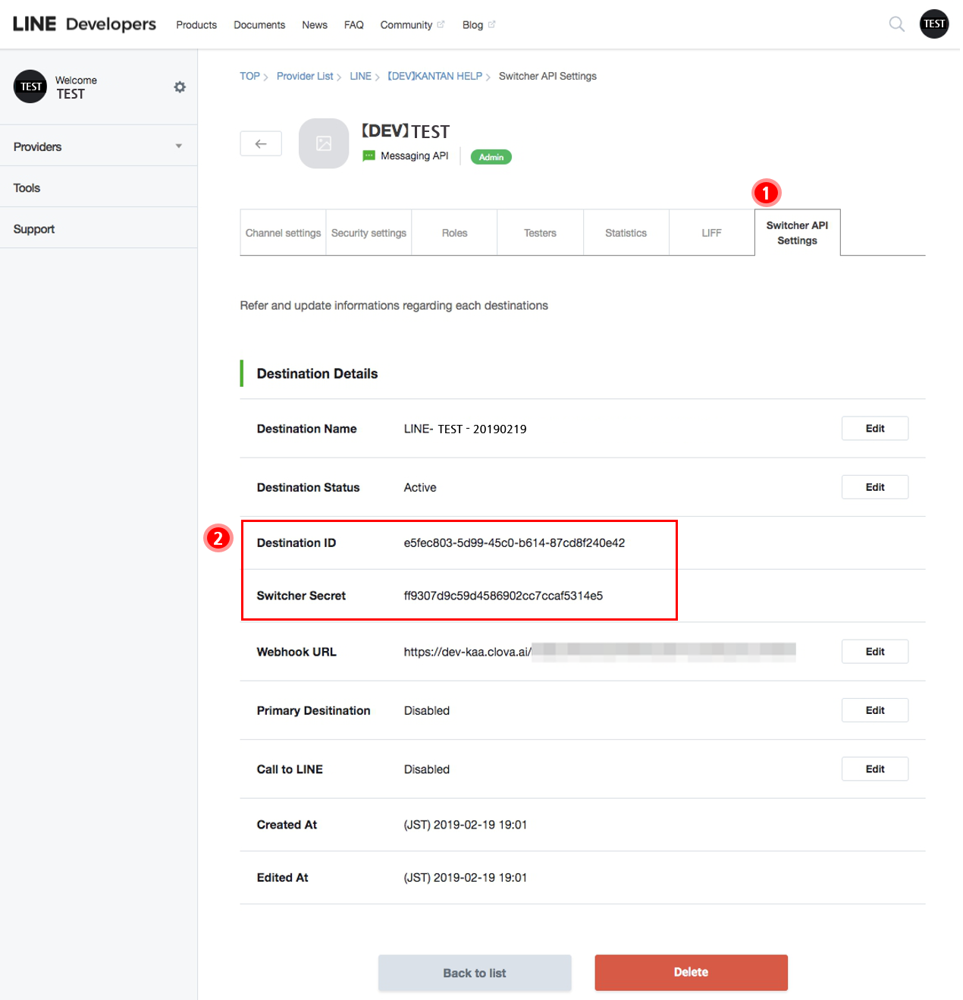
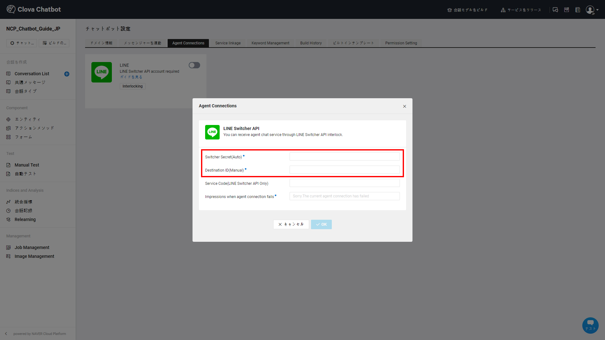
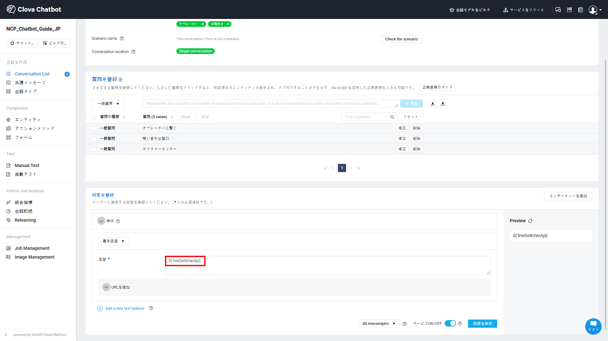

Agent Connectionsガイド - LINE(LINE Switcher API)
Agentに引き継ぐためには、LINE Switcher API連動を設定してからAgent Connectionsのための会話を作成する必要があります。
LINE Switcher APIを連動する
① LINE Business Centerに接続し、 管理画面をクリックします。

② LINE OA Managerに遷移し、アカウントの設定をクリックします。

③ Messaging APIの設定 > APIをONにするをクリックします。

④ LINE Developersをクリックします。

LINE Developers情報を確認する
LINE DevelopersのSwitcher API Settings TabからSwitcher secret、Destination ID情報を確認できます。

① Switcher API Settings Tabをクリックします。
② Switcher Secret、Destination ID情報をコピーして記録しておきます。
LINE BRAINのチャットボットを設定する
Agent Connectionsを設定する
LINEの設定で記憶しておくべき値は、次のとおりです。
- Switcher secret
- Destination ID
チャットボットサービスの Agent ConnectionsでLINEを選択し、上記の２つの値を入力します。

- agentに引き継ぐことが失敗した場合、応答するメッセージも一緒に入力します。
Agentに引き継ぐ会話の作成
 LINE Switcher API連動が完了すると、Agentに引き継ぐためのアクションメソッド
LINE Switcher API連動が完了すると、Agentに引き継ぐためのアクションメソッド ${'lineSwitcherApi}が表示されます。

Agentに引き継いでもらいたい会話の回答にアクションメソッド ${'lineSwitcherApi}を入力し、Agent Connectionsの設定を完了します。
関連情報へのリンク
ドメインの作成、Conversation Listとコンポーネントの管理および統計管理に関しては以下の利用ガイドを参照してください。
- Chatbotスタートガイド
- Chatbotご利用ガイド
- チャンネル連動ガイド
- Agent Connectionsガイド